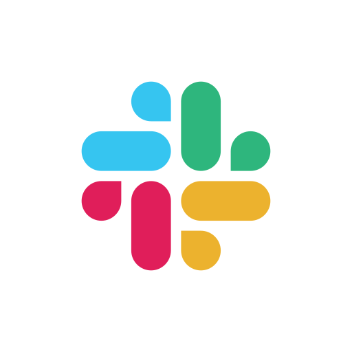
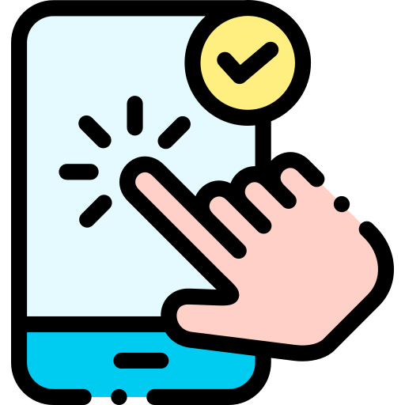

Datasets
MIRAGE-COVID-CCMA-MA-2023
MIRAGE-COVID-CCMA-MA-2023 takes into consideration the traffic generated by more than
50 experimenters using 14 mobile apps for communication and collaboration via 2 devices.
The experimenters used each app to perform at most 4 different user activities.
In this new dataset, we analyzed the traffic when the user performs multiple activities (MA)
during a single session with a given app (i.e., multiple activities in a single traffic capture).
The dataset will soon be available for downloading.
MIRAGE-COVID-CCMA-2022
MIRAGE-COVID-CCMA-2022 takes into consideration the traffic generated by more than 150 experimenters using 9 mobile apps for communication and collaboration via 3 devices. The experimenters used each app to perform at most 3 different user activities. The dataset is released in two formats, making available both the raw traffic data captured (in JSON format) and a pre-processed version providing the set of inputs (in pickle format) leveraged in our work.

MIRAGE-COVID-CCMA-2022 and MIRAGE-COVID-CCMA-MA-2023 datasets are released under a Creative Commons Attribution-NonCommercial-NoDerivatives 4.0 International License.
CrowdSourced Collection
We collected our datasets by utilizing the Mirage architecture, which was conveniently optimized for capturing the traffic generated by
communication and collaboration apps.
The collection took place in the ARCLAB laboratory at the University of Napoli "Federico II".
Four different mobile devices were used for the experiments, all running on Android 10:
a Google Nexus 6, a Xiaomi Mi 10 Lite, and two Samsung Galaxy A5.
The collection campaigns involved more than 200 volunteer students, both undergraduate and graduated,
and researchers as experimenters who took on the role of typical users of the apps under consideration.
During each capture session, the experimenters engaged in a particular activity on a selected communication and collaboration app.
This approach allowed us to obtain a traffic dataset that reflects the typical usage patterns of these apps.
The duration of each session varied from 15 to 80 minutes, depending on the specific activity being performed.
Consequently, each session produced a PCAP traffic trace, accompanied by relevant ground-truth information extracted from additional system log-files.
Using established network connections through the standard Linux command "netstat,"
the capture system reliably labeled each biflow with the corresponding Android package name.
Furthermore, we enriched this information by adding a custom label that described the specific activity carried out by the user operating the device.
Mobile Apps

User activities

Methodology and Implementation
This section describes the methodology and implementation aspects of traffic classification and prediction for communication-and-collaboration apps via Deep Learning approaches. Further details can be obtained by clicking on "More Details".
Internet Traffic Classification - More Details
Internet Traffic Prediction - More Details
Dissemination
Publications
University Courses
Computer Networks
The topics of interest and objectives of the ADDITIONAL project are presented during the Computing Networks course, chaired by Prof. Antonio Pescapè
at the University of Napoli Federico II for the Bachelor's Degree in Computer Engineering.
The Computing Networks course aims to provide the first theoretical notions and the necessary operational skills on
computer networks and in general on packet switching communication networks.
The course, following a top-down approach, favors an application vision of modern telematic technologies
in the first place, to then arrive at the presentation of the software and hardware technologies at
the basis of the creation of telematic systems.
During the Computing Networks course, the students are actively involved in the ADDITIONAL project, specifically in the collection campaign of the traffic generated by the communication-and-collaboration apps under study and its early characterization. The students are asked to carry out typical usage of these apps and perform specific activies to properly label collected traffic with both the app the activity tested.
Internet Data Analysis
The topics of interest and objectives of the ADDITIONAL project are presented during the course of Internet Data Analysis, chaired by Prof. Antonio Pescapè
at the University of Napoli Federico II for the Master's Degree in Computer Engineering.
The Internet Data Analysis course aims to provide students with the specialized knowledge useful in analyzing a modern Internet
network with special reference to network management and security aspects.
The course presents the content by adopting an engineering and empirical approach and blends
theoretical lectures, practical classes, seminars and exercises.
It presents in depth the main aspects and motivations behind the analysis and performance evaluation
of a network and then delves into the methodological and practical aspects related to network analysis with
a specific focus on the analysis, identification and classification of anomalous events such as, for example,
cyber attacks. The course also includes an exercise part functional to the development of a paper.
During the Internet Data Analysis course, the students are actively involved in the ADDITIONAL project, specifically regarding the analysis of the communication-and-collaboration apps' traffic via data-driven approaches, the production of technical reports, and the presentation of results to their colleagues.
DIGITA Academy
DIGITA Website
DIGITA is the "Digital Transformation & Industry Innovation Academy" of the University of Napoli Federico II in partnership with Deloitte Digital.
It was created with the aim of providing young talents, with at least a Bachelor's degree, with the necessary skills to bridge the gap between companies and the Digital ecosystem, enabling them to be protagonists in digital transformation.
The educational project consists of 9 months, 6 months of classroom lessons and 3 months of Project Work at partner companies.
The students and partner companies of the DIGITA were briefed on the subject matters and objectives of the ADDITIONAL project to foster its dissemination among both students with heterogeneous backgrounds and industry.
International Workshops and Conferences
Learn more about us
TRAFFIC is a research group of the DIETI Department at University of Napoli Federico II, working in the area of computer networks and multimedia, with focus on Network Monitoring and Measurements.
Its research involves measuring and evaluating both experimental and operational systems/networks to derive knowledge and models for network behaviors.
TRAFFIC (and this is the main motivation of its name) focuses on monitoring Internet traffic to provide input for developing new algorithms, protocols, and systems for the current and future Internet, with a specific focus on network management and security.
Besides teaching activities, the members of Traffic are involved in several national and international research projects.
They have a significant track record with respect to funding (approx. more than 5 Mln euro) and publications (e.g. conferences like SIGCOMM, Conext, IMC and journals like JSAC, IEEE Networks, IEEE Communication Magazines, etc).
We are part of the larger Computer Networks group (COMICS) at University of Napoli Federico II.

Antonio Pescapè
PhD, Full Professor (Principal Investigator)Giuseppe Aceto
PhD, Associate ProfessorDomenico Ciuonzo
PhD, Tenured Assistant Professor
Valerio Persico
PhD, Tenured Assistant ProfessorAntonio Montieri
PhD, Assistant ProfessorGiampaolo Bovenzi
PhD, Assistant ProfessorIdio Guarino
PhDAlfredo Nascita
PhD StudentCiro Guida
PhD StudentPartners
Contact Us
Location:
Via Claudio, 21, 80125 Napoli NA, Italia
© Copyright Scaffold. All Rights Reserved
Icons from www.flaticon.com are licensed by CC BY 3.0
© Traffic 2023. All Rights Reserved.